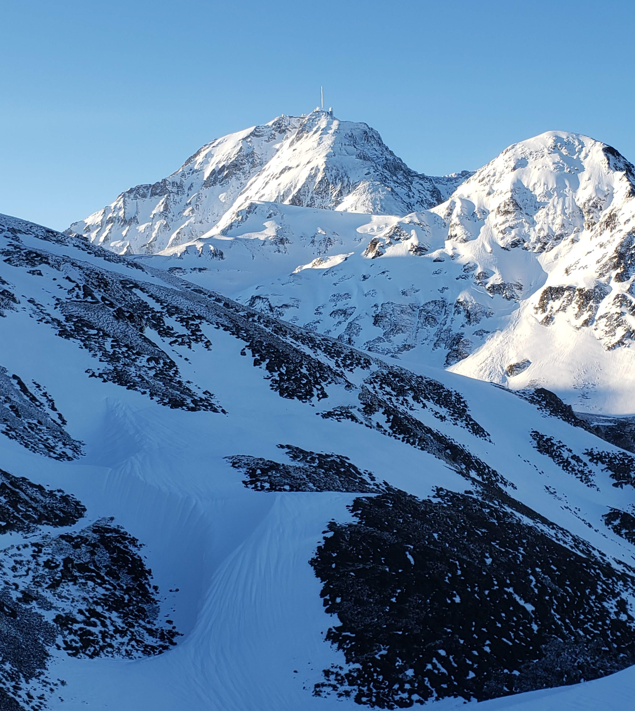
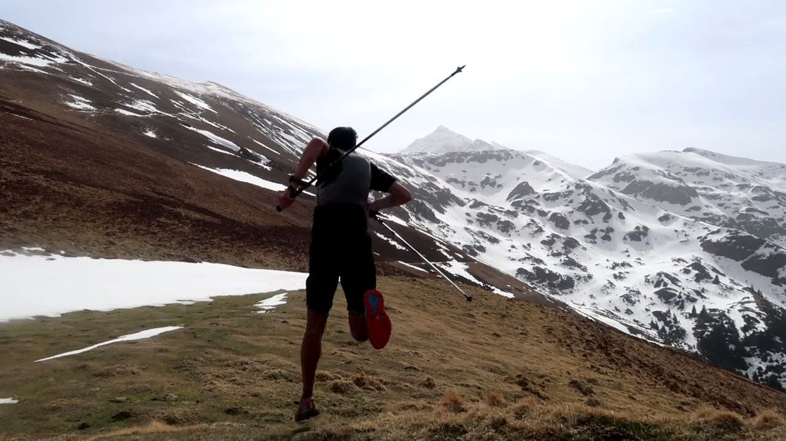
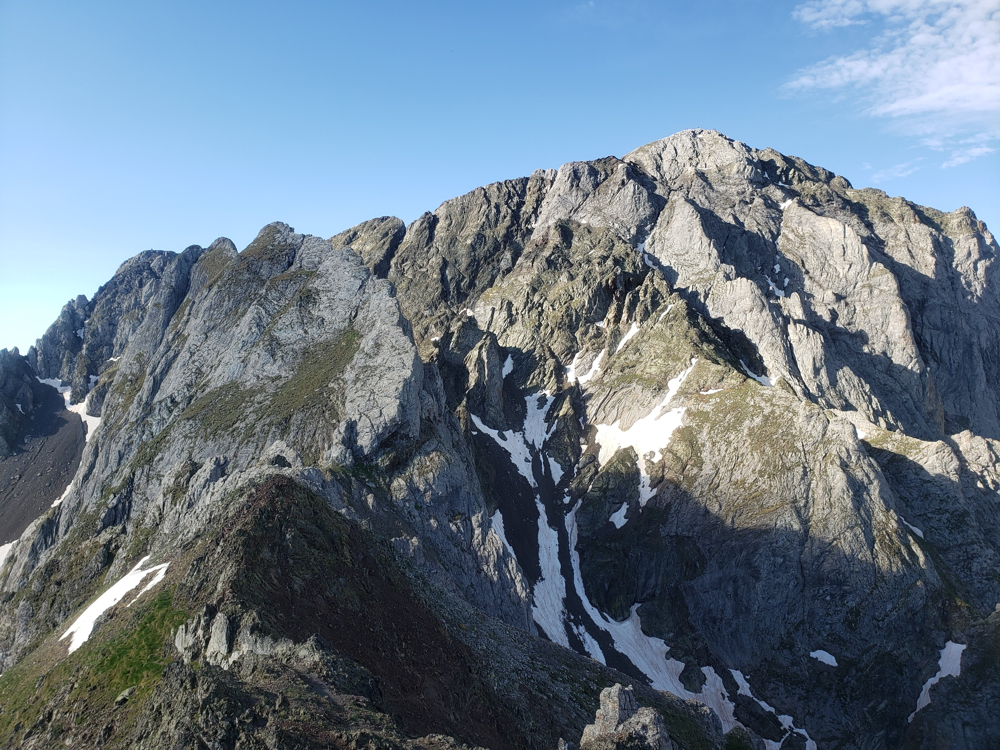
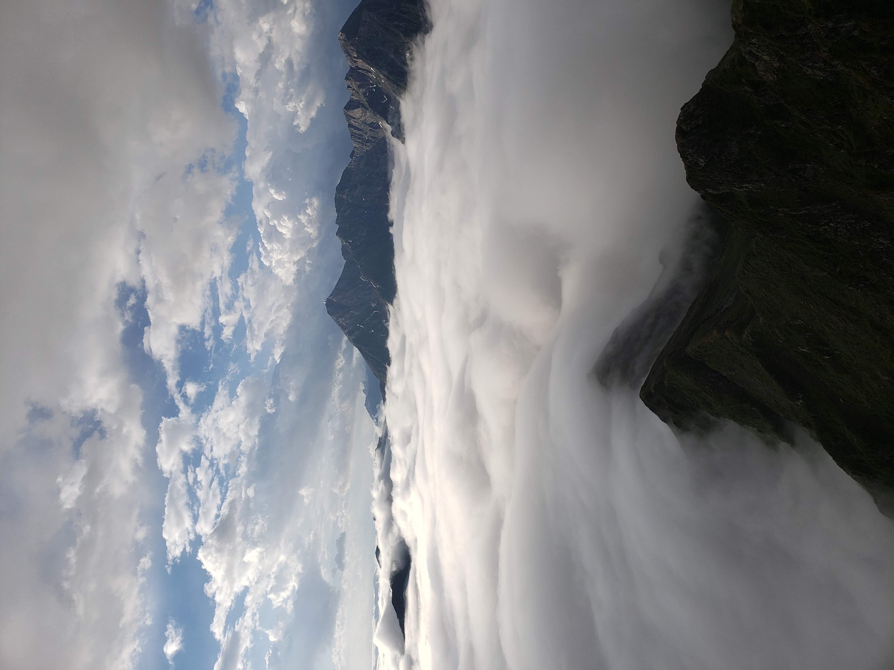

Barring some episode of self-transcendence, results are a function of preparation. After a string of
underwhelming results in 2021, I gave myself an ultimatum: perform or knock it off. Its a team effort now that I have a family. We sacrfrifice a great deal to my ambition, so its only natural I demmand the best of myself.
.png) Birds eye view: I accumulated 240000m (800000ft) of climbing coming into the Grand Raid. Lowest month was July, which suffered from too much racing.
Birds eye view: I accumulated 240000m (800000ft) of climbing coming into the Grand Raid. Lowest month was July, which suffered from too much racing.Crafting a Race Calendar
The main goal was always the Grand Raid and I tried to design a race calendar which would deliver me prepared, basically
to increase specificity towards this objective as the season went on. I front loaded my season with a series of short
races 22-25km to make me faster and expanded out to 74km then 100km before the Diagonale des Fous (165km).
See race calendarTraining Phase 1: Periodization
Running all winter, I was concerned about my proclivity to ramp volume too quickly. To buffer this I
settled on a periodization approach, wherein each month I gradually increase volume for three weeks and on the fourth week cut volume in half. The general theme for winter training was to build a solid cardiovascular base and develop some strength and speed. The program was inspired by the book, Training for the Uphill Athlete by Steve House, Scott Johnston, and Kilian Jornet.
| Distance (km) | Climb (m) | Time (hr) |
|---|---|---|
| 92 | 3400 | 10.5 |
| 101 | 4300 | 11.6 |
| 108 | 4000 | 13.3 |
| 96* mostly cycling | 1600 | 8 |

Winter
Winter conditions make it hard to get in the mountains everyday. I did not have a ski setup so was forced to option two: the treadmill. I did 2-3 days a week in the local gym, hitting four types of treadmill workouts:- VertOut (hiking power) : 2h @ 16% grade with a weight vest (18kg) 6-7.5 km/hr
- Intervals : 45min-1 hour mixed bag of intervals all going uphill
Example: 10 x 4min @ 16% increasing speed from 8-10 km/hr
Example: (2 x 6min 2 x 12min) x 2 @ 12% speed 9-12km/hr - Tempo : 1-2hr fluctuating grade and speed to resemble a 'hilly course'
- Recovery : 1hr @ 10-12 km/hr 2% grade (more ergonomic)

Spring
Spring spells consistency, over four months I took 8 days off including 5 consecutive with a bad case of covid. Come march I arrived at 'cruising altitude', 160km/week. I did not want to continue ramping volume so changed tactics. Once the snow melted out I dropped the gym pass and ran exclusivly in the hills.| Distance (km) | Climb (m) | Time (hr) |
|---|---|---|
| 141 | 7380 | 15.7 |
| 144 | 8040 | 16.5 |
| 158 | 9150 | 19.2 |
| 116 | 1200 | 7.6 |
Phase 2: Long-Blocks/Racing
I wanted to retain good volume but still allow plenty of easy days. My solution was to do 10 day blocks and shoot for an
average of 17-22km/day. Racing kicked off in May and there would be variation in volume depending on proximity to each race.I made the mistake of doing too many short races. Although I did well, breaking two course records and enjoying the intensity of all-out efforts, these short races were not wise choices. They broke up training and offered little in the way of specific adaptations for my primary objectives.
Phase 3: Race-Specfic Block
Come August my body could take some abuse so I threw out my injury-risk-aversion and dug deep to execute as much volume
as I could handle. See my more about it here.
Race Summary
I raced seven times with a total of 440km with 31400m of climb. The most important metric was the general upward trend in the quality of my results. In retrospect I would substitute early-season short races for one or two at marathon/50k distance. The finale of Canfranc-Canfranc to the Grand Raid was perfect. In each race I learned something, so I have no regrets, but in the future I plan on asking myself why for each race, how does it fit in with the training scheme and lend itself to the year's primary objectives?Training Approach Summary
This year revealed a lot to me. Work to do but plenty of potential. If I had to point my finger at one thing which enabled me to achieve a world-class result at the Grand Raid it would be my unrelenting
consistency. Life is hard on the training, training is hard on the body, there were so many days when I had to just
force the session, clawing my way toward a distant dream of success.
Thanks for reading, if you made it this far you must share interest in training and running. Its not easy crafting the perfect race calendar or training plan. If you are looking for help don't hesitate to send me an email at bdhiman244@gmail.com and we can make it happen!
